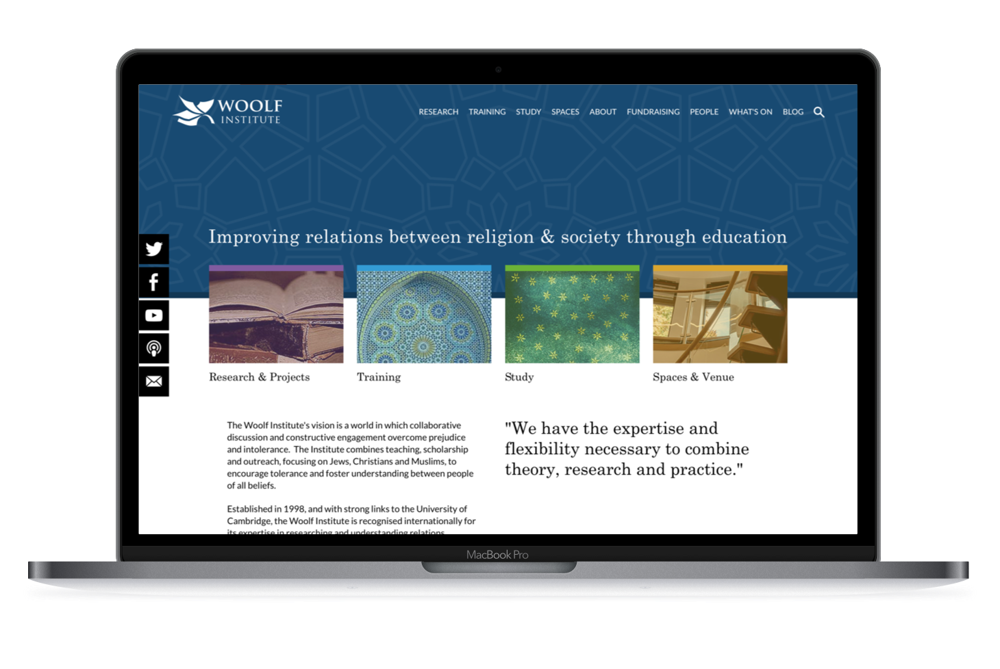

Woolf Institute, Cambridge
Technologies: Craft CMS v2, Coloured Sections, CSS Animations
The Woolf Institute wanted a brand new website to coincide with their move to an impressive new premises on Madingley Road in Cambridge.
I integrated the website into Craft CMS, and used Javascript and SASS to create a number of unique touches and add interactivity to the website. For example, the book logo pages light up when hovering over the logo in the header, and also reveal when a user scrolls to the footer (using Javascript for viewport detection). Since the page 'theme' changes colour depending on where you on on the website, I wrote some javascript so that when a user hovers over the promo boxes on the homepage, the background changes to match that section colour to the theme they would be landing on.
The Woolf Institute was a pleasure to build, and great clients to work with. At the end of the project, myself and the team were treated to a tour of their brand new building.

Above: A demonstration of the various hover effects I coded on the Woolf Insitute Homepage
